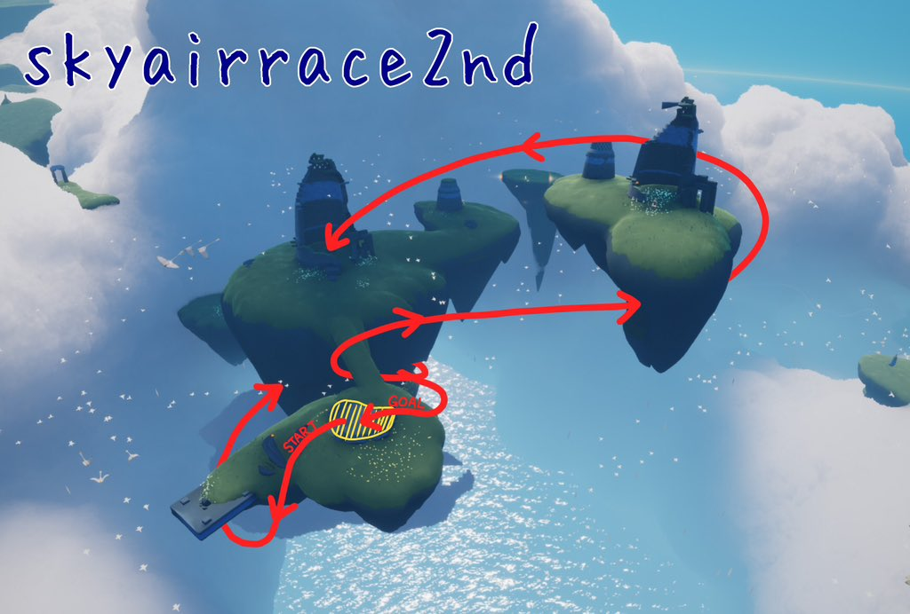
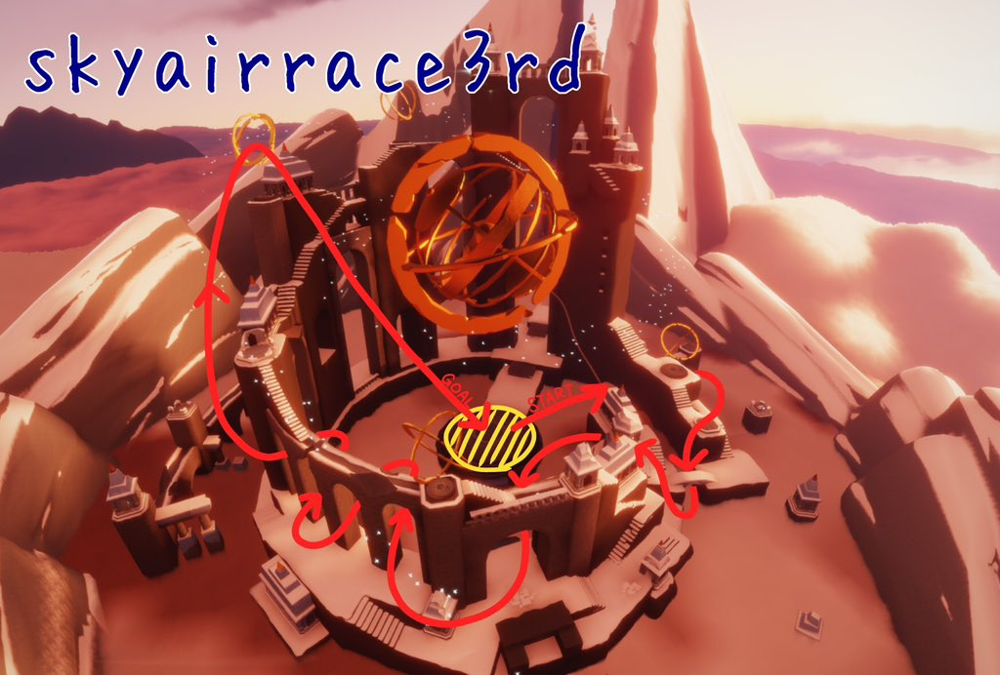
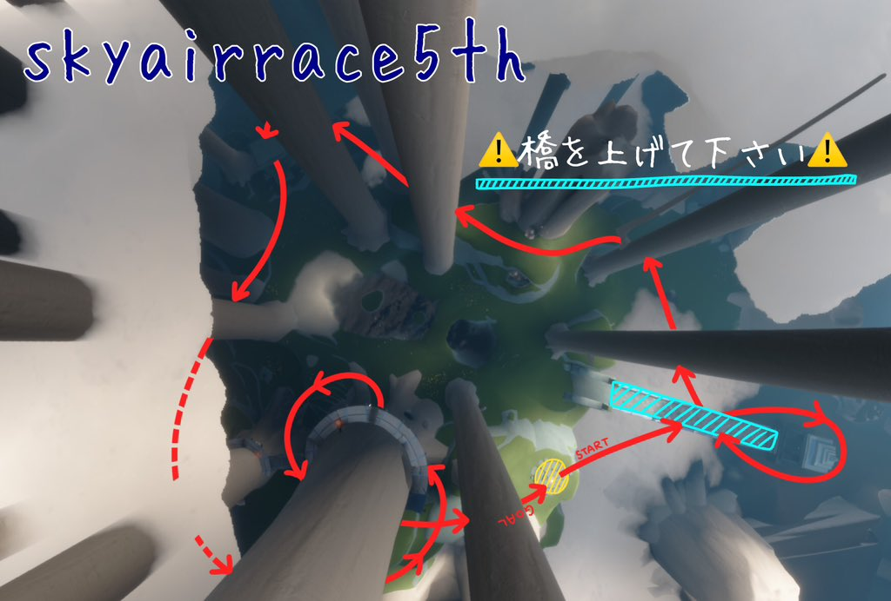
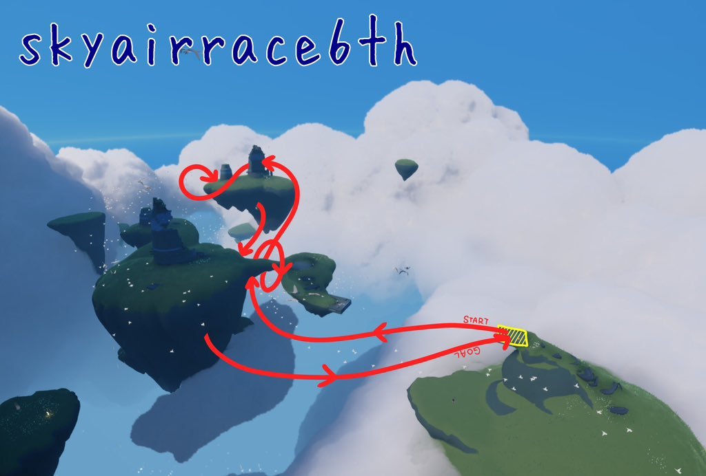
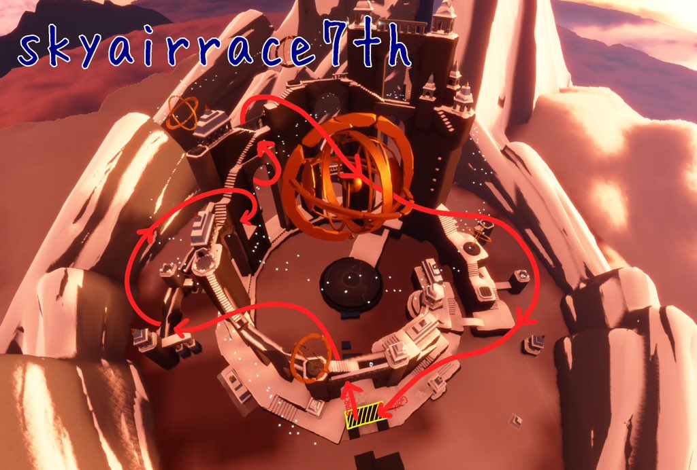
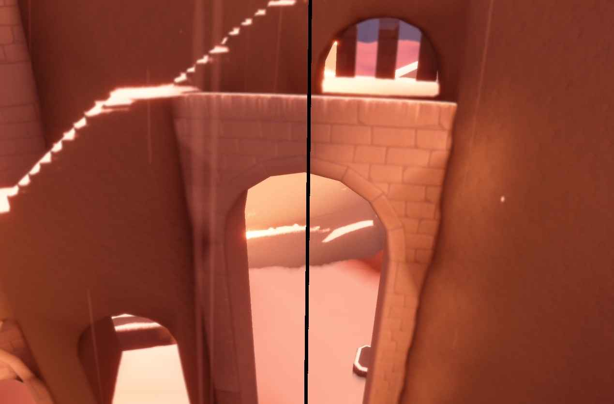
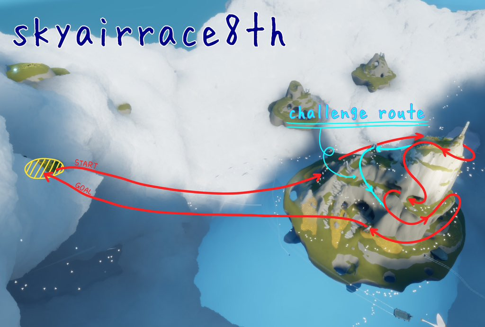
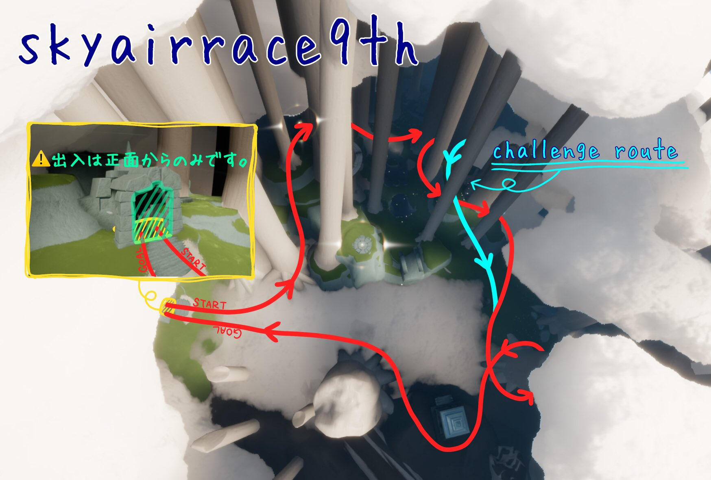
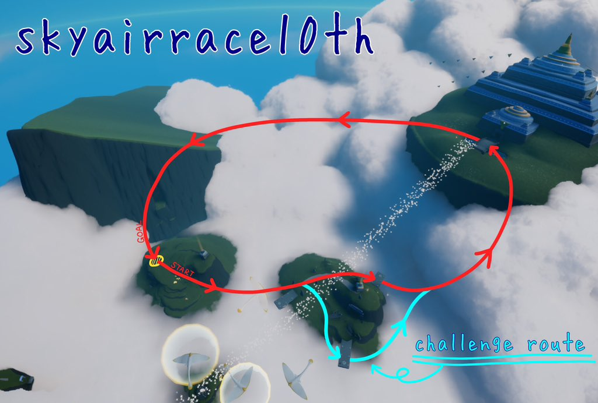
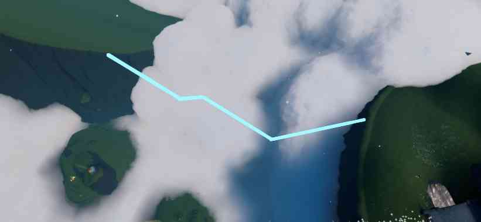

本家コース
第1回大会 1st(コースNo.1)
#skyairrace1st
草原/村エリア
一次予選足切り57.50秒

KONNAKANJI図

 ）
）チェックポイント
PREPマンタを出す
START/GOAL洞窟近くの島の石板の上
塔の左を回る※塔の高さより上を通らない
エリア中央を通る鳥の道もしくはその下を潜る
蝶々扉の島の穴を上から入り、もう一つの穴から抜ける
洞窟のある崖へ向かい、崖の上の草地部分に設置する
最初に回った塔を高さを合わせて回り、ゴール
No.1補足
・チェックポイント４、洞窟のある崖までのルートに制限はありません。
・マンタ等を使ってもいいです。
テクニック紹介
このコースの過去の予選や本戦でよく使われていた技術の紹介です。
コースQ&A
-- Q1 --

最後の崖登りからゴールまでのタイムが伸びず、どんな風に飛んだら速いですか。
崖からゴールまでについてですが、以前までは風壁を利用して加速できたのですが、今はそれができなくなっているようです。
なので定番ですが滑り降りからは塔を膨らみすぎないように羽ばたくのが速いのではないかと思います。
（気を付けること：
・スライドが入った状態で、ある程度下向きの角度で飛んでいる時に羽ばたくと逆に遅くなってしまいます。
・グライドの操作で画面に触れて離すということをすればするほど減速します。→フリック減速）
そのように考えると崖降り時点である程度エナジーが貯まっている必要があるので、崖までのルートには、マンタを利用するか、鳥の道付近から直線で省エネ気味に羽ばたくか（スライド必須）、になるかなと思います。
大穴の後はエナジーを全快しておくのが理想です。
また、崖接地の時は崖の向きに沿った接地ではなく、ゴールの方を向いて接地できるのが良いです。
接地の後にスライドが切れたら：
ゴールまでに羽を使い切る感じで下向きに一定間隔で羽ばたく
切れなかったら：
塔の高さあたりまで滑り降りた後にグライドモードに切り替えてすぐに羽ばたく
をおすすめします。
-- Q2 --

今の仕様になってからのチェックポイント通過のコツや加速ポイントなどありましたら知りたいです。
チェックポイントのコツ：
建物やオブジェクトを回る際に膨らみすぎないことを気をつけましょう。
特に3つ目のポイントである穴については穴に入る際にどの辺に出る穴があるのか、位置感覚が身につくと無駄な動きを減らせます。
崖について、よくあるのが崖の高さより遥か高くを大回りで飛んでタイムロスになることです。
崖の上を頂点としたルートではなく、崖の気持ち手前あたりを頂点として飛行できるとロスを減らせるかと思います。
加速ポイント：
マンタです。
タイミングは固定なので、いつスタートすればどの子が使えそうか、ご自身の飛行に合うタイミングを探してみてください。
減速ムーブ：
全てに言えることですが、グライド操作時に画面に触れたり離したりすればするほど減速します（フリック減速）。
特に羽ばたいていない時に無駄に触って離してを繰り返していないか気をつけてみてください。
このコースは滑り降りができると早くなります。
技術だけで滑り降りを安定させるのは難しいため、滑り降りしやすい条件を使えるなら使いましょう。
・高身長でやる
・20か30fpsでやる
これだけでもだいぶ滑り降りの確率が高くなります。
さらに安定感を増やすなら、以下の操作もおすすめです。
・着地と同時に移動入力をいれる「着地スライド」を狙う
・着地の直前にホバーモードに変える
-- Q3 --

大穴に潜る時に、穴の縁に触れてしまい星の子が止まってしまいます。
接触せずに通るコツがあれば知りたいです。
手前で触れるのか、抜ける際に触れるのかで対応も変わってくるかと思いますが、大きな方針としてはまずは速度を落として飛べるイメージを掴むのがいいかと思います。
手前で触れる場合は下がるのが少し早かったり、穴に対しての角度が浅かったりするのだと思います。
なので高い位置から少し遅めに下向きに向かうと、縁に立ち止まることはなくなるかと思います。
そして、逆に抜ける際にぶつかるのであれば、下降角度をもう少し急にしたり、内部の構造の位置関係を把握するのが大切になると思います。
また、速度が速くなりすぎると普段のような小回りが効かなくなることがあります。
速度を保って飛びたい場合にはその速さでの飛び方を身につけること、確実に飛ぶためには速度を敢えて落としていつも通りに飛ぶようにしましょう。
-- Q4 --
このコースの魅力を一言で教えてください！
このコースではマンタを使いこなすことが大きなポイントになります。マンタを上手に使えるか、マンタで出た速度を維持できるかが大きな腕の見せ所です。
ただ、大穴を抜ける時や、崖でのUターンなどの細かいところでも意外と大きな差になります。
タイムを縮めるポイントが複数あるという意味で非常に面白いコースだと思います。
ひとりでタイムを縮めるのも良し。複数人でやってマンタでの大逆転劇を目指すのも良し。
エアレの一番初めのコースにして、奥深さが詰まったコースです。
第1回大会 2nd(コースNo.2)
#skyairrace2nd
草原/鳥の巣エリア
一次予選足切り34.50秒
KONNAKANJI図
）チェックポイント
START/GOALワープ場所脇の石版（足が離れるか、出た時点でスタート）
桟橋を潜ってトンネルへ入る
通り抜けたら上に上がり、石版の横の橋を回る
前方の島の穴へ向かう
穴を抜けたら旋回して、建物の間を抜ける※高さ設定無し
竪穴に真上から入る（ホールインワン）
→FINISH
テクニック紹介
このコースの過去の予選や本戦でよく使われていた技術の紹介です。
コースQ&A
-- Q1 --
最後、塔にある穴の中に入れません(ホールインワン)。
通り過ぎたり、ぶつかって立ってしまいます。
真っ直ぐ入るにはどうすればいいですか？
おそらくこのコースの大きな壁となるポイントですね。
まずは速度を落として練習するといいかもしれません。
穴への入る角度については、気持ち急な角度にすると入りやすいように思います。
その際、鳥で出来ている輪の下側付近を通過するイメージです。
穴に向けては星の子と穴のほんの少し手前が重なるようにして近づいていきます。
穴に入る手前で穴の先に見える壁を目標に微妙に調整します。
失敗した際に、なぜ手前すぎたのか、なぜ奥に行き過ぎてしまったのかを探ってみるといいかもしれません。
よくあるのは手前過ぎは角度が浅いパターン、行き過ぎは速度が出過ぎていて降下するのが遅すぎるパターンなどがあります。
-- Q2 --
ホールインワン後、自分がどこを向いているのかわからなくなり上手くゴールに向かえません。
操作のコツがあれば教えてください。
一つの方法として、単純に画面を明るくして壁がどう動いているのかを見やすくするという方法があります。
また、ホールインワンをした後、穴の中に入った時点で操作を中断してしまいがちですが、
ホールインワンが全て終わるまで急降下した時からじっと手を止めておくのも一つの手です。
（=移動入力を左右にぶらさず、入れっぱなしにする）
その際、星の子の体勢がきちんと水平になっているかを見ておいてあげると、向きが変化していないかを確認、微調整できます。
かなり上手くなると、穴を通っている時にわざと移動スティックを左右にわずかにずらして、グライドモードのままゴールへ向かうこともできます。
-- Q3(上級) --
コース序盤の横穴を抜けて橋下から次のチェックポイントへ向かう際、橋下をくぐっての方向転換で切り返しを使っていますが島の補正に引っ張られて中断してしまうことが多々あります。
補正が掛からないように工夫している点などありましたら、是非お聞きしたいです。
島(橋)から少し距離を置いて切り返す、もしくは星の子を若干右に操作して逃がしてすぐに左へ切り返すことで対策していますが、
やはりギリギリを狙って好タイムを狙いたいです。
概ね今の方針でいいと思います。
切り返す前に無理に上昇するのではなく、切り返し後の飛行込みで橋を越えるようにしましょう。
Twitter（現X）で「#skyairrace2nd until:2021-11-5」などで検索すると、当時の上位者の飛行も見れるので、そちらも参考にしつつタイムを縮めていけるといいと思います。
好タイムを狙うためにギリギリのホバー切り返しを狙うなら、補正ジャンプがかからない島より若干低い位置を狙うしかないです。
その直前にグライドでの羽ばたきがあるとホバー切り返しの瞬間に慣性で橋の上まで星の子が上昇します。グライド羽ばたき→直後にホバー切り返し、慣性で上昇する→直後にグライドで島スレスレを飛行する流れです。
-- Q4 --
このコースの魅力を一言で教えてください！
個人的にこのコースは上昇気流があることもあり、速度が出るうえに、細い道を通ったり、180度ターンをしたりでエアレの楽しさが詰まったコースだと思っています。
ただ、速度を出しすぎると操作が著しく難しくなるのも現実なので、適度に速度を出しつつ、ミスなく飛行できるようにするととても気持ちよく飛行できて楽しいです。
ぜひ上達を目指して飛んでみてください！
第1回大会 3rd(コースNo.3)
#skyairrace3rd
峡谷/天球儀エリア
一次予選足切り45.00秒
KONNAKANJI図
）チェックポイント
START/GOALエリア中央で回転する石板の、縁石の内側からの離陸、接地
トンネルをくぐる
橋の下をくぐる
2つの建物の間を抜ける
5つのアーチのスラロームを抜ける
回転するリングをくぐる
→FINISH
No.3補足
・チェックポイント5の回転するリングは、吊り革と呼ばれています。
テクニック紹介
このコースの過去の予選や本戦でよく使われていた技術の紹介です。
コースQ&A
-- Q1 --
スラロームをうまく小回りできません。
コツなどあれば教えてください。
進入するときの速度が大事です。
速すぎると曲がり切れなくなり、遅すぎると次のアーチに届かず羽ばたきを入れることになります。
最初の大きなアーチ（右から左）をくぐったくらいで一度羽ばたくのを我慢してみて普段より遅いスピードでスラロームを開始すると新しい世界がひらけるかもしれません。
-- Q2 --
天球儀の輪(吊り革)を通るとき、引っかかりやすいです。
どうしたら通りやすいですか？
自分の飛行の軌道と天球輪の軌道を脳内シュミレーションして少し先の未来を予測する力が必要になります。
こればっかりは慣れと訓練なので意識しながら練習を繰り返すしかありません。
コツを一つ上げるならば天球輪をなるべく早く視界に捉え、潜り抜けるまでの時間を長くすることが大事です。
スラロームの最後のアーチを抜けた後、前に進むよりも早く上に上がる事を意識すると良きです。
-- Q3 --
このコースの魅力を一言で教えてください！
チェックポイントの間隔が短く細かいため連続カーブあり、加えて縦にも大きく移動があるため立体的を味わえる飛び応えのあるコースです。
第1回大会 4th(コースNo.4)
#skyairrace4th
雨林/風の街道エリア
一次予選足切り44.50秒
KONNAKANJI図
 ）
）チェックポイント
START/GOAL石台※補足あり
トンネルに入り、右の穴から抜ける
振り返ったところにあるトンネルを抜ける
頂上の門の高さまで上がって裏を回る
※門の側面に回る前に高度を確保して下さい。
下のアーチをくぐる
黄色い布の石柱の左側を高さを合わせて通過する
右の穴に入る
→FINISH
No.4補足
・腕利きの工匠の精霊の精霊開放の際に、火をつけた後の光を追いかけた6回目の描写にて、案内人のいる大きな島に、舟をとめた石台がスタートとゴール
・【質問】チェックポイント5について、柱より低ければいいのか、黄色い布より低くないといけないのか
【回答】石柱に高さを合わせて下さい
テクニック紹介
このコースの過去の予選や本戦でよく使われていた技術の紹介です。
コースQ&A
-- Q1 --
2個目のトンネルをくぐってから島の頂上のチェックポイントの門の裏を通る時、高く飛べずにホバーで昇って通ってます泣。
滑空モードでかっこよく通過するコツを教えてください!!
それから素早く頂上まで行くにはどのような軌道が良いですか？また何回羽ばたきますか？
まずはスライド状態をキープしていることが大前提になります。
スマホに限ってになりますが、スライドが入っている状態であれば、羽ばたくと同時に右斜め上へのフリックと画面を回転させるだけで頂上まで上ることが可能です。
羽ばたきは５回で登れます。
スライドが切れてしまっている場合はトンネルの出口で一度接地し、スライド状態を作ります。
この場合、垂直飛行で登るのも有りです。
-- Q2 --
最後の穴(チェックポイント6) をはいるのが苦手なのと、くぐってからスタート地点に戻る時に膨らんでしまいます。
綺麗にスタート地点まで戻るコツはありますか？
スマホ限定になってしまいますが、滑空のまま穴を抜けた後、左フリックを入れることで壁ギリギリを通ってゴールに向かうコースに乗れます。
羽ばたきを入れる場合はゴールを正面に捉えてから行うのがコツです。
スピードに乗っている状態で羽ばたくと非常に曲がりにくくなるため、それた方向に羽ばたいてしまうと曲がり切れずにゴールを通り過ぎてしまいます。
-- Q3 --
このコースの魅力を一言で教えてください！
沢山の狭い箇所を通過する激ムズコースですが、飛べたときの爽快感はもうヤミツキ！
操作の緩急のバランスも良くずーっと飛んでいられる素晴らしいコースです。
羽を気にせず好きなだけ羽ばたけるのも魅力の一つ。
このコースを安定して飛べるようになったとき、あなたの飛行レベルは著しい成長を遂げているでしょう！
第2回大会 1st(コースNo.5)
#skyairrace1st
雨林/晴れ間エリア
一次予選足切り43.00秒
KONNAKANJI図
）チェックポイント
PREP橋を上げる
START/GOAL光の子がいる円形敷石の上
橋の下をくぐる
建物の奥の柱を回る（高さ不問）
橋の下をもう一度くぐる
木の右側を通る
建物の中を通る（柱1本でもok）
木の間を通る
同じく木の間を通る
木の右側を通る
木の中を通る（入口と出口は別である事）
木の右側を通る
→FINISH
No.5補足
・パン焼きの時間に飛ぶ場合や、地下洞窟のエモートの協力等、野良さんへの配慮は忘れずにお願いします。
・チェックポイント5「建物」は東屋と呼ばれます。
テクニック紹介
このコースの過去の予選や本戦でよく使われていた技術の紹介です。
コースQ&A
-- Q1 --
後半エナジー切れを起こして飛べなくなってしまいます。
羽ばたく回数は減らした方がいいですか？
また回復ポイントはありますか？
羽ばたく回数を減らすというよりは、どの区間で何回羽ばたくかを意識するといいでしょう（羽管理）。
何とかして羽ばたき続ける方が速くなります。
回復ポイントで一番重要なのは林間（チェックポイント7）上空の雲です。
おそらく、羽ばたけなくなる星の子はここに触れてないことが原因だと思います。
ここに触れる&視界不良の中操作が出来れば足切りにぐっと近づけます。
東屋（チェックポイント5）から林間（チェックポイント7）上空の雲にたどり着くためにはスライド滑空&しっかり上スワイプが必須です。
この区間までに足を着いてしまいスライドが切れることがないようにしましょう。
また、ここ以前の区間にぶつかるなどで余分に羽ばたいてしまった場合は雲への到達がむずかしくなります、
繰り返し練習しスムーズに飛べるように心がけましょう。
視界不良の操作は何となくです、自分なりの感覚で覚えましょう。
チェックポイント7の雲で回復した後は下向き飛行になり、食卓を抜けた後は急カーブ1周なので羽ばたきすぎるとかえって遅くなったり大回りになる可能性があります。
2つめの東屋を抜けた後に何回上向きに羽ばたいたら雲で回復ができるかの感覚をつかみ、雲の回復も雲に突っ込むのではなくて雲の真下に沿って回復するのを意識して練習するといい思う。
-- Q2 --
2個目の建物(東屋)の中を抜ける時に、柱にぶつかってしまいます。
どこを抜けるのがやりやすいですか？
向かって右手前の柱1本のみを回るルートがやりやすいので、挑戦しましょう。ぶつかる原因として、
A 曲がりきれず奥の柱にぶつかる、
B 上下の高さが合わず屋根にぶつかる、
C 上昇が間に合わず着地してしまう。
Aの対策としてはフリック旋回で速度を落としてでも曲がりきるしかないです。
BCの対策としては東屋（チェックポイント5）の手前で星の子の進行ベクトルを上向きに直す必要があります。
木（チェックポイント4）から東屋（チェックポイント5）までの間に丘があり、東屋（チェックポイント5）は丘よりも低い位置にあります。
直前の羽ばたきでは東屋（チェックポイント5）の下あたりを狙うように調整し、その後、上スワイプや上フリックで若干の浮遊感が出るように星の子の進行ベクトルを上向きにします。
これで、東屋（チェックポイント5）の時に上下の調整でもたつくことがなくなり、曲がることだけに集中でき、ミス無く通過する確率が増えることでしょう。
-- Q3 --
東屋を潜った後、羽回復の為上空の雲に向かおうとしますが、なかなか雲にたどり着けません。コツはありますか？
質問1で回答した内容のため割愛。
追加で東屋手前のエリアギリギリのところに雲がちょろっとだけあり、その雲で回復することもできます。
高低差がきつく、地面すれすれを飛びつつ、雲の反動をコントロールするため、このルートも十分な練習が必要です。
↓雲回復なしver.
↓雲回復ありver.
-- Q4 --
このコースの魅力を一言で教えてください！
羽切らさないで速いってかっこいいよね、、！
第2回大会 2nd(コースNo.6)
#skyairrace2nd
草原/鳥の巣エリア
一次予選足切り37.00秒
KONNAKANJI図
）チェックポイント
START/GOAL石の桟橋※祝祭の旋舞家の精霊の精霊開放時の石の桟橋
橋を縦に1回転する※橋は下から回る
建物の間を楽園側から通る
穴を楽園側から通る
穴を通る
→FINISH
No.6補足
・チェックポイント1について
橋の下を飛ぶ際、水平真横に浮島がある範囲は橋下とみなす。
上へ上がった際に、上記の範囲より上に出ても問題ありません。
・チェックポイント2について
建物より上飛行した際は、しっかり間を通ってる事が確認できればok。
・【質問】チェックポイント2～3について
1度楽園側に抜けてから来た道をUターンで楽園側から抜けるのは規定違反？
【回答】はい Uターンや引き返しでの通過は無しでお願いします。
テクニック紹介
このコースの過去の予選や本戦でよく使われていた技術の紹介です。
コースQ&A
-- Q1 --
浮き島の塔の間、穴を通る時にどうしてももたついてしまいます。
塔は右回りと左回りどちらが通りやすいですか？
また、大回りにならないためのコツはありますか？
もたついてしまう原因は苦しい操作をしているからです。
苦しい操作とは何かというと1.下向き移動中の方向転換(捻りの動き)と2.視点操作です。
捻りの動きは下入力から左右入力をするのではなく、左右入力から下向きに入力します。
こうすることで上昇気流の中で左右入力をしたときに浮き上がるような現象を抑制できます。
視点操作は左手で操作中に行うと星の子の進行ベクトルが狂ってしまいます。
なるべく定点で理想的な起動を描けるようにしましょう。
回る方向の通りやすさは個人差があるのですが、「スタートから向かって左側の塔を時計回り」が主流のためそのルートで説明します。
・宙返り（チェックポイント1）から塔の間（チェックポイント2）の羽ばたきを4回にする。
・上昇の頂点を塔の間かつ低い塔の高さに持っていくイメージ。
・急停止からフリックによる方向転換で塔の間に進行ベクトルを向ける。
・すぐさま滑空モードに切り替えて旋回しながら落下。
・捻りの動きで進行方向を予め整える。
穴を潜る瞬間に一瞬上スワイプするとちょうどよく通り抜けてくれます。
↓参考動画
-- Q2 --
スタートしてすぐ、橋を一回転が上手く小回り出来ません。何かコツはありますか？
うまく小回りできない原因として、気流のコントロールができていないことが主だといます。
ここは2通りの方法があり、2つの違いは切り返しを使うか使わないかです。
自分は切り返しを使わない本戦ルートが好きなのでそちらで説明します。
この方法のメリットは
・橋に補正がかかる事故がないこと、
・視点切り替えが落ち着いてできること、
・気流のコントロールがしやすいことです。
この方法は縦回転というよりは斜め上の旋回をします。
スタートから橋の左側の島に目掛けて2回羽ばたきます。
やや手前から旋回を始め、右側の島と橋のくっついてるところの奥を目標に飛びます。
旋回しきれない勢いかと思いますので、やや上フリックを連打し速度を落とします。
速度が落ちすぎて旋回中に足が着きそうになっても上スワイプをすることで高度を維持できます。
橋をこえたら捻りの動きで橋の下をくぐります。
-- Q3 --
このコースの魅力を一言で教えてください！
涼しい顔してこのコース飛んでたら、、、かっこいいよねぇ！
第2回大会 3rd(コースNo.7)
#skyairrace3rd
峡谷/天球儀エリア
一次予選足切り49.50秒
KONNAKANJI図
）チェックポイント
START/GOALエリア入口近くの石台の上
橋の上を通る
どちらかの穴を通る
柱と屋根飾りの間を通る（上のみ）
穴を通る
中央側から奥の柱の間を通る
大天球儀のいずれかの輪を通る
石柱の上に接地する
建物の高さに合わせて壁との間を通る
→FINISH
No.7補足
・チェックポイント5にて、柱の間はどの位置を通ってもひとつのオブジェクトとしてカウントされます。
テクニック紹介
このコースの過去の予選や本戦でよく使われていた技術の紹介です。
コースQ&A
-- Q1 --
峡谷の上昇気流に慣れず、足切りタイムをなかなか切れません。
タイムを縮めるには、どのチェックポイントを特に練習したらよいですか？
前提として、タイムの縮め方には二種類のやり方があると思います。
「簡単にわずかにタイムを短縮できること」
「難しいけどタイムを大きく短縮できること」
の二種類です。
前者の視点で一つ「中央よりやや左側からスタートし、五回飛行でチェックポイント1まで向かう」ことを意識してみてください。
これで0.1秒は縮まります。
-- Q2 --
チェックポイント4の柱の隙間を抜けるのが苦手でぶつかってしまいます。通るコツはありますか？
目指す場所が見えない時は、オブジェクトから脳内で補助線を引いてみるのがコツです。

画像のように、大きなトンネルちょうど中央の延長線上の片側に柱があります。
大きなトンネルの半分空レース側を目指して飛ぶことで、成功率は上がるかと思います。
-- Q3 --
このコースの魅力を一言で教えてください！
上昇気流に慣れていくほどより速度感が楽しめるコースであることが魅力です。
第3回大会 1st(コースNo.8)
#skyairrace1st
雨林/風の街道エリア
一次予選足切り54.00秒
KONNAKANJI図
）チェックポイント
START/GOALエリア入口（雨林ホーム側）の島
穴を抜ける
門の裏から石と門の間を通る
矢印の方向で穴を抜ける※入り口の島から見て奥から手前の方向
1番奥の石標を回る
大きな石標の右側を高さを合わせて通る
→GOAL
CHOICECHALLENGE ROUTE：門の通過でチェックポイント3の代替ルートとします。
No.8補足
・スタートは雲の内側で立てる場所全て
・チェックポイント4は詳細画像の通りの回り方に限定します。
テクニック紹介
このコースの過去の予選や本戦でよく使われていた技術の紹介です。
コースQ&A
-- Q1 --
最後、ゴールの島まで上がるのに、高さが足らず困ることがあります。
その原因と、成功しやすい解決方法を知りたいです。
原因は
1.非スライド状態での飛行
2.上フリックが足りていないこと
が挙げられると思います。
逆に言うと、スライド状態で上フリックをすると基本的には解決できるかと思います。
ゴールまでの視点操作はエアレの中では比較的簡単な部類に入ると思います。
ゴールに視点を向けることで目的地を視覚化できますから、行き先に目を向けた上で目一杯上フリックをすると良いかもしれません。
-- Q2 --
チェックポイント4で石標を折り返すときに、タイムを縮めようと思って接地すると星の子が前のめりになって減速してしまいます。
なんででしょうか？
前傾による減速理由は「fps値の設定が高いこと」「星の子の身長が低いこと」に起因するスライド切れです。
他方で、タイムを縮めるためにはチェックポイント4で接地をしない飛び方をすることが良いかと思います。
と言うのも、レース開催当時とゲーム自体の仕様が変更されており、接地後の方向転換が上手くいかなくなっています。
星の子の体の向きはチェックポイント5の方向を向いてもグライド切り替え時には別方向に飛んでいってしまうこともあるので、飛んだまま方向転換するやり方が現実的かと思います。
-- Q3 --
チャレンジルートの門が通れません！コツを教えてください！
チャレンジルートの門の直前まで星の子は下向きに飛んでいます。
いざ門の手前で角度を変えようと思ってもすぐに姿勢は変えられないので、門のやや手前から操作を開始すると高さの調節はやや容易になります。
左右の調節はどうしても慣れが必要です。
-- Q4 --
このコースの魅力を一言で教えてください！
ロングコースのため、長い時間ミスなく飛ぶ必要がある緊張感が魅力です。
第3回大会 2nd(コースNo.9)
#skyairrace2nd
雨林/晴れ間エリア
一次予選足切り42.00秒
KONNAKANJI図
）チェックポイント
START/GOAL地下洞からの出口
木の間の橋/足場の上を通る
木の左側を通る
木の右側を通る
木の左側を通る
木を左回りで一周する
建物の橋側の2本の柱より左側を通る
→GOAL
CHOICECHALLENGE ROUTE：奥の木の左側を通ることでチェックポイント3+4の代替ルートとします。
No.9補足
・スタート/ゴールは階段より上の平な場所。ゲートの正面から入って着地（静止）することが条件になります。
・スタートとゴール共に正面のみ飛行することが可能で、横抜けは禁止です。
・【質問】階段は含まずって解釈でいいですか？
【回答】最上段の石の部分のみ階段とみなさず、上の平な場所とみなしスタートとゴールの判定の条件として含みます。
・本コースに限り、エリア全域の上の雲を使うことは全てペナルティ+3秒の対象になります。
テクニック紹介
このコースの過去の予選や本戦でよく使われていた技術の紹介です。
コースQ&A
-- Q1 --
終盤の左旋回360°(チェックポイント5)は、ラインかスピードどちらに重きを置いていましたか？
チェックポイント5手前の雲でバウンドした時のスピードを保ったまま、できるだけ木に沿って回ることを意識していました。
旋回中ずっと羽ばたくのではなく、羽ばたきをやめた後でもしばらくスピードが出ている状態を生かして回るといいと思います。
-- Q2 --
最初にスタートしてすぐ風壁を使いたいのですが、弾き飛ばされてしまいます。
成功率を上げるにはどうしたらいいですか？
まず、該当する風壁と木幹の間の距離を確認する為に反対方向から入ってみてください。
この時、風壁に弾かれない範囲は星の子1人分程度、しかし上にいくにつれてその範囲が広くなるのが実感出来るかと思います。
基本はこの隙間に入るイメージを持って、その直前から木に沿う態勢で突入することが出来ると上昇の為の羽ばたきで風に乗ることが出来ます。
成功率を上げるという点で、ここの風壁は角度がきつい場所でもあるのでスワイプではなく右方向へ2、3回フリック操作をして羽ばたくと成功しやすくなるかと思います。
風壁に頭ではなく腹を擦る角度を狙うと自ずとスタート時の離陸の角度も変わってくるので、是非試してみてください。
晴れ間の風壁はタイムアタックで使われている風壁の中で最もシビアで跳ね返されやすい風壁です。
もし初めて風壁を使った飛行をするなら、孤島やエアレNo10の草原の風壁で練習もおすすめです。
-- Q3 --
このコースの魅力を一言で教えてください！
狭いところをくぐる場面があまりないため初心者でも飛びやすいコースです。
それでいてタイムを縮めるには技術の習熟が必要であり、やりがいのあるコースです。
コース取りや羽管理など飛行の基本的な技術を学ぶことができます。
第3回大会 3rd(コースNo.10)
#skyairrace3rd
草原/村エリア
一次予選足切り56.00秒
KONNAKANJI図
）チェックポイント
START/GOAL洞窟側の石板の上
石の柱の間を通る（高さ制限なし）
神殿側の桟橋の下を通る
神殿前の橋の下を通る
崖の上で接地する
→GOAL
CHOICECHALLENGE ROUTE：中央側の桟橋の下を通ることで、チェックポイント2の代替ルートとします。
No.10補足
・スタート/ゴールは賞賛する鐘の造り手の精霊がいる島
テクニック紹介
このコースの過去の予選や本戦でよく使われていた技術の紹介です。
コースQ&A
-- Q1 --
神殿の先、風壁を利用するところで上手く加速が出来ません。
風壁で加速を得るコツはありますか？
風壁使用時は、基本的には風の形に沿ってから反対方向に移動入力＋羽ばたきを入れることで加速します。
擦って掴んだ風を弾くように手放し加速する、というと少しイメージしやすいでしょうか。

↑ここで用いる風壁の形です。凹凸を掴む操作は無理にせず、まずは感覚を養う為に、風に乗っては弾いて加速するという方法を取ってみて下さい。
以下、成功例と失敗例です。
成功例↓
失敗例↓
成功例はバタバタ、ビューッという風の音がしているので風壁への十分な接触があり、移動入力＋羽ばたきのタイミングが噛み合っています。
それらが噛み合わなかったのが失敗例ですが、同じルートを通っていても風壁の使用により約4秒の差が出ているのが分かります。参考にしてみてください。
-- Q2 --
チャレンジルートからチェックポイント3の橋の下をくぐるまでの間、雲を使って上がるのが苦手で軌道がブレてしまいます。
どんなルートで上がると安定しますか？
雲を使って神殿前に飛ぶ際、向かって右端にある雲を使うと神殿前の橋に向けて急旋回することになるので軌道がブレやすくなります。それを避けた上で比較的簡単なルートを動画で紹介します。
星の子が雲に触れた瞬間に真っ直ぐ上に羽ばたいてから左に旋回すると、雲に触れる時間が短いので軌道がブレにくく、しかも上昇力も得られるためお薦めです。
軌道がブレるということは雲を使った加速が出来ているということなので、速度に慣れつつまずはこのルートで練習すると良いかと思います。
-- Q3 --
崖から滑り落ちができず、止まっちゃいます。
どうしたら勢いを殺さずに接地〜滑り降りできますか？
崖上で止まってしまう要因は、主に以下の二つが考えられます。
1.速度が足りていないこと
2.接地の際の操作で崖に対し補正がかかっていること
これらは風壁の利用や、崖方向にフリック操作を行わないことである程度の回避が出来ますが、その他に滑り落ち(＝接地でのスライド)を成功させやすい条件があるので紹介します。
・高身長
・20fpsもしくは30fps
・接地と同時に移動入力をいれる
・接地の直前にホバーモードに切り替える
以上の設定や操作を行うことで、滑り落ちの確率を上げることが出来るので、どれかを取り入れて、ご自身に合うスタイルを見つけてみてください。
-- Q4 --
このコースの魅力を一言で教えてください！
橋くぐりや滑り落ち、風壁利用、雲利用、速度のある着地まで。様々なテクニックを応用出来る楽しいコースです。